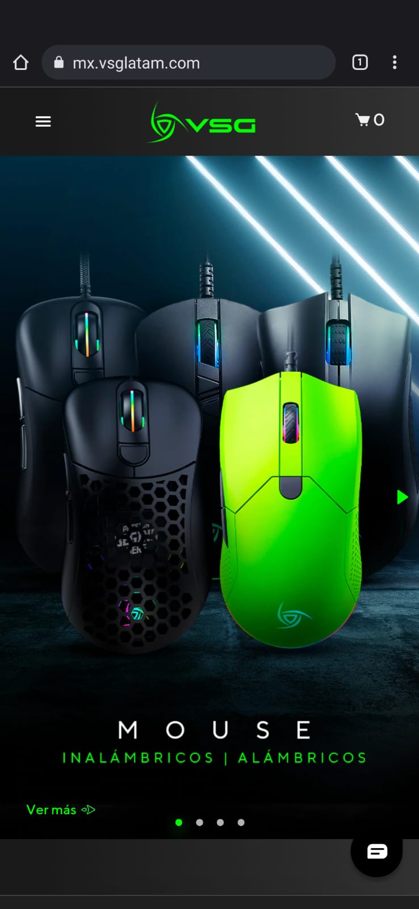

Visual Hierarchy
Blizzard
blizzard.com"The first thing we notice in this website is the importance of the different typography and size of the letters. This shows a great example of visual hierarchy since we can easily remark what is the main product that this website is promoting."
White Space and Clean Design
Fiverr
s Fiverr.com"As you come to visit this website, you can clearly see how well they use the white color in order to make contrast. They also use white to make an impression of minimalism and seriousness.""
PARC: Contrast
VSG latam
vsglatam.com "In this case, this website is very catchy. The first thing that we see is that fluorescent green that instanly catches the eye. They use it in different tonalities without loosing the purpose of using this colors that is to impress with their devices."